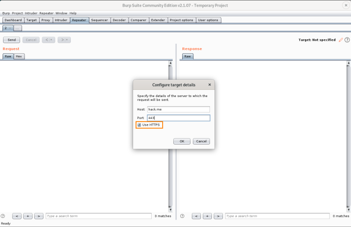
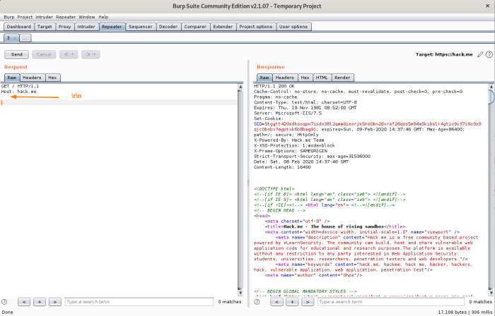

burpsuite
use burpsuite with HTTPS connections is the same thing that use it with HTTP
but we have to select “use HTTPS” flag
In the results of Burpsuite how we can see there are not SSL handshake,
ecryption,... but is is focused on analyse the request
